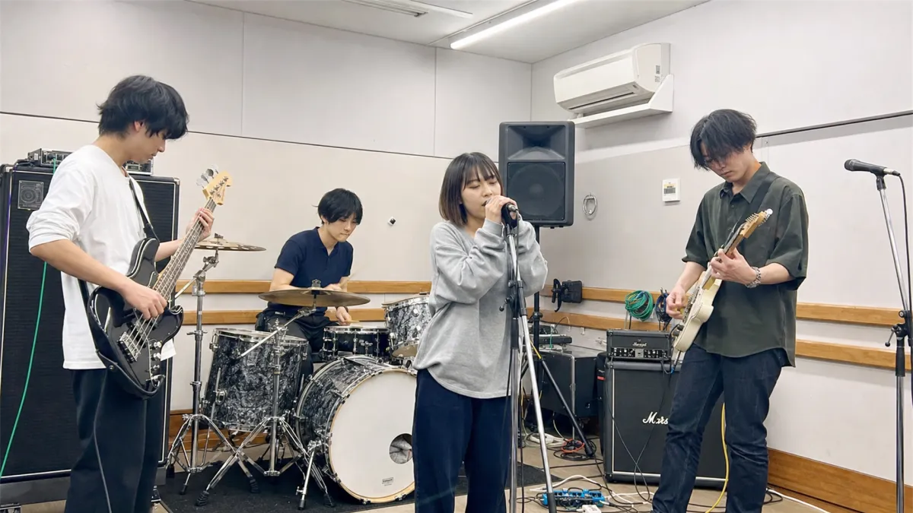
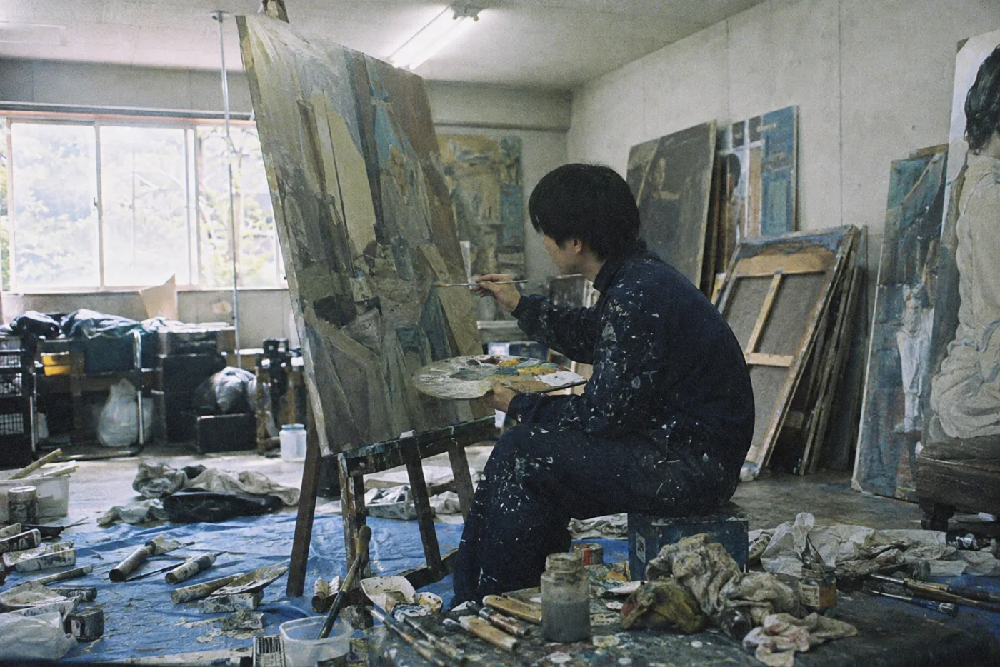
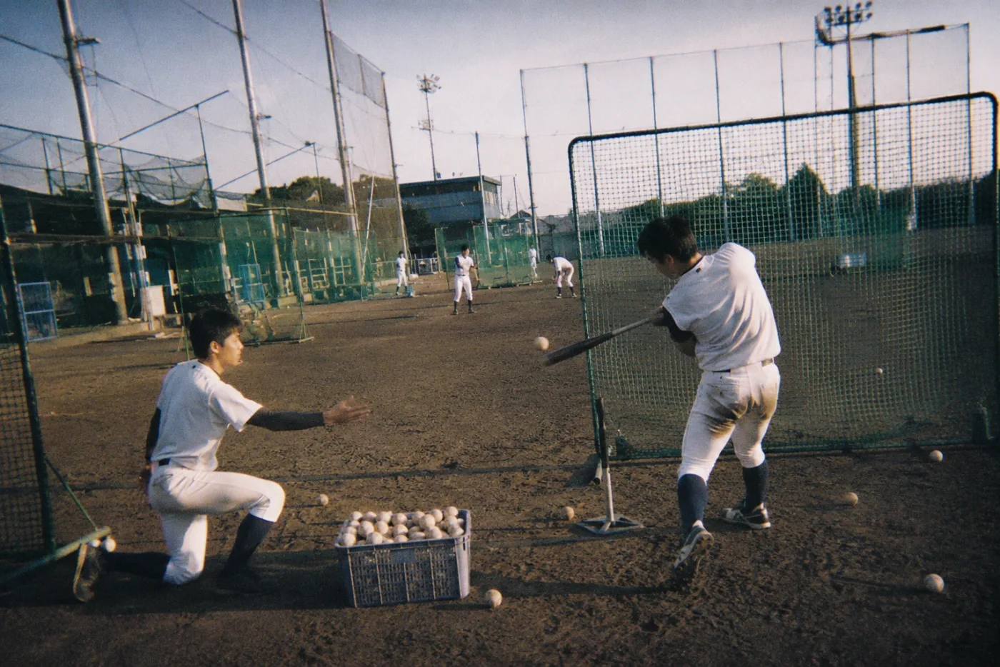
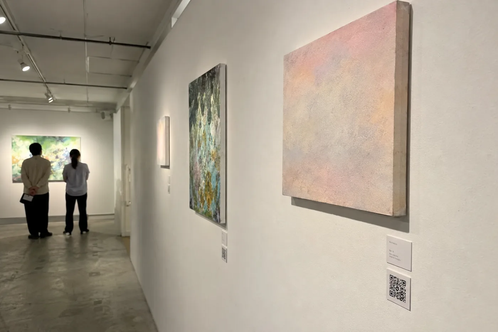
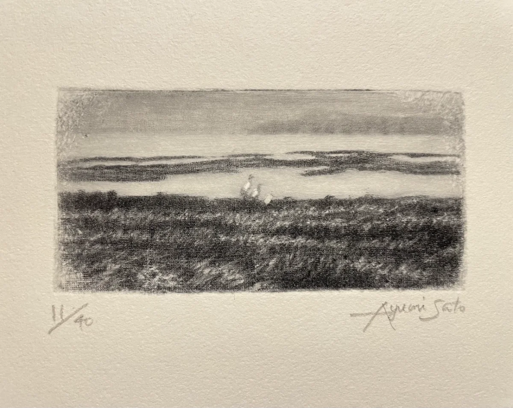

Lapsellとは
制作の裏側を、一点物のデジタルグッズとして販売できます。


一点物のグッズとして販売
練習の映像は、AIが数分ごとのクリップに区切ります。売れたクリップは非公開になり、購入した方だけが視聴できます。

応援した記録を、地図に残す
購入した方は、マップ上のセルを先着順で取得できます。活動拠点に近いセルほど、早くから応援していたことを示します。
練習や制作の様子を撮った動画を、一点物のデジタルグッズとして販売できます。編集は必要ありません。
先行利用に登録する一緒に試していただけるクリエイターを募集しています。
制作の裏側を、一点物のデジタルグッズとして販売できます。
練習の映像は、AIが数分ごとのクリップに区切ります。売れたクリップは非公開になり、購入した方だけが視聴できます。
購入した方は、マップ上のセルを先着順で取得できます。活動拠点に近いセルほど、早くから応援していたことを示します。
今では誰もが知っているアーティストにも、客席に数人しかいない時期があります。その頃の練習風景を撮った動画が手元に残っていたら、ファンにとってどれくらいの価値になるでしょうか。

これまで、そうした時期の映像はほとんど残されてきませんでした。撮っても売る場所がなく、残す理由もなかったからです。Lapsellは、今この瞬間の練習を、後からは手に入らない一点物として残します。

これから撮る映像も、今日撮った映像も、同じように出品できます。

20代の男女393人に伺った自社調査では、およそ3人に1人が制作風景の動画に対価を支払ってもよいと回答しています。

クリップはSNSでの拡散を通じて、既存のファンの外側にも届きます。アプリ内には新人を発掘する目的で見ている購買層もいます。

完成した作品だけでなく制作の裏側を共有することで、ファンとの関係が深まります。

写真やアクリルスタンドとは異なる、これまでになかった形のグッズとして販売できます。

撮った映像を確認してから出品するため、生配信のように取り消せなくなることがありません。
出品したクリップは、いくつかの入り口からファンに届きます。

会場の物販机にQRを置くだけで、その場で買ってもらえます。在庫も送料もかかりません。

普段の投稿にリンクを添えるだけです。練習の様子を見た人が、そのまま購入まで進めます。

作品の横にQRを掲示すれば、完成品を見た人が、その制作過程まで持ち帰れます。
こうした導線がなくても、アプリ内のマップやフィードから見つけて買われます。
販売手数料は10%です。登録と出品は無料で、初期費用と月額費用はかかりません。
ファン同士で転売されたとき
販売額の20%が、出品者に分配されます。
登録も出品も無料です。いつもの練習をそのまま撮って、試しにアップロードしてみませんか。
先行利用に登録する
私は幼少期から、母の銅版画の制作を横で見てきました。
完成品の裏側に隠れてしまう試行錯誤にある面白さを私は知っています。それが記録されないまま捨てられていくことが、私にはもったいなく思えました。今は誰も見ていない過程であっても、将来は貴重な記録になるかもしれません。
この体験が、制作の過程そのものを残す仕組みをつくりたいという着想につながっています。
完成品の裏側にある試行錯誤そのものに、市場価値を与えることを目指しています。駆け出しのクリエイターが下積みの時期から正当に収益を得られ、ファンがその成長の証人になれる社会を作ります。
最優秀賞
第10回芝浦ビジネスモデルコンペティション（主催：芝浦工業大学）
中高生から社会人まで48チーム169人が応募したコンペティションで、Lapsellの構想が最優秀賞に選ばれました。
現在はリリースに向けた準備段階で、実際に活動されている方のご意見を伺いながら仕様を固めているところです。練習や試行錯誤そのものに価値がつく仕組みを一緒に作りたいと考えております。
メールを受け取りましたが、送付先はどのように選んでいますか。
公開されている活動情報を拝見し、練習や制作の様子を継続して記録できそうな方に、一件ずつ内容を確認したうえでご連絡しています。
どんな動画を販売できますか。
練習、制作、リハーサルなど活動の裏側であれば、ジャンルを問わず販売できます。完成品である必要はありません。
登録者数や再生時間などの収益化条件はありますか。
ありません。1本目のクリップから販売できます。
動画編集のスキルがなくても使えますか。
AIが切り分けとタイトル案の作成、価格の提案までを行いますので、内容を確認して出品するだけで販売できます。
映り込みや失言が世に出てしまわないか心配です。
人物の映り込みや発言はAIが検出しますので、公開前に確認して除外できます。
マップとは何ですか。
購入した方が世界地図上のセルを先着順で取得できる機能です。早くから応援していたことを地図に残せます。クリップ本編は非公開のままです。